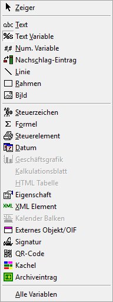

Wenn im WinLine Formular Editor ein Formular geöffnet wurde und aktiv ist, dann steht das Menü "Neues Element" zur Verfügung, wobei viele Funktionen auch über die Buttonleisten des WinLine Formular Editors bedient werden können. Weiterführende Informationen entnehmen Sie bitte dem Kapitel "Buttons und Funktionen im Detail".

Ø Zeiger
Aktiviert den Zeiger zur Auswahl und Markierung von Komponenten auf dem Formular.
Ø Text
Ermöglicht die Eingabe von frei wählbaren Beschriftungen und Texten, z.B. für Überschriften in Tabellen.
Ø Text Variable
Öffnet ein Fenster zur Eingabe und Platzierung von Textvariablen wie z.B. den Vertreternamen.
Ø Num. Variable
Öffnet ein Fenster zur Eingabe und Platzierung von numerischen Variablen z.B. dem Gesamtbetrag.
Ø Nachschlag-Eintrag
Damit kann statt einer Variable, die keine richtige Information darstellt (z.B. die Vertreternummer in einer Personenkontenliste), eine alternative Variable (z.B. den Vertreternamen) angedruckt werden. Dazu gibt es im WinLine Formular Editor gewisse Tabellen, deren Daten immer zur Verfügung stehen.
Ø Linie
Ermöglicht die Platzierung von Linien auf dem Formular, wobei die Linien senkrecht oder waagrecht positioniert werden können.
Ø Rahmen
Ermöglicht die Platzierung von Rahmen auf dem Formular, wobei der Rahmen entweder leer oder mit einer Farbe gefüllt sein kann.
Ø Bild
Öffnet ein Fenster, um eine Grafik in das Formular einzubinden. Folgende Grafikformate werden unterstützt:
ü WMF (Windows Meta File - ohne Header)
ü BMP (Bitmap), GIF (Graphics Interchange Format)
ü TIF (Tagged Image File Format)
ü TGA (Truevision Targa)
ü JPG (JPEG File Format)
ü PCX (Zsoft Paintbrush)
Ø Steuerzeichen
Mit den Steuerzeichen können Sie direkt Druckersteuersequenzen auf dem Formular eingeben. Diese Informationen werden nicht angedruckt, sondern dienen lediglich der Steuerung.
Ø Formel
Öffnet ein Fenster, um eine Formel einzufügen, wobei die Formel aus normalen mathematischen Operationen oder aus einem VB-Scriptcode bestehen kann.
Ø Steuerelement
Damit können Steuerelemente wie Druckerumleitungen, Druckersteuerungen, Mailversand, SQL-Abfragen und Dergleichen eingebaut werden.
Ø Datum
Öffnet ein Fenster, um ein Datum einzufügen, wobei das Format des Datums beliebig gestaltet werden kann.
Ø Geschäftsgrafik
Diese Funktion wird derzeit nicht unterstützt.
Ø Kalkulationsblatt
Diese Funktion wird derzeit nicht unterstützt.
Ø HTML Tabelle
Diese Funktion wird derzeit nicht unterstützt.
Ø Eigenschaft
Damit können Eigenschaften, die den verschiedenen Stammdatenobjekten (Personenkonten, Artikel, Textbausteine etc.) zugeordnet werden können, angedruckt werden.
Ø XML Element
Damit können XML-Elemente von Personenkonten oder Belegen angedruckt werden.
Ø Kalenderbalken
Diese Funktion wird derzeit nicht unterstützt.
Ø Externes Objekt/OIF
Ein OIF ist ein Objektorientiertes Info Formular, das als eigener Thread ausgeführt wird und somit im Hintergrund abgearbeitet wird, wobei das Ergebnis in einem eigenen Bereich dargestellt wird. Ein OIF kann in unterschiedlichen Varianten verwendet werden, wobei auch unterschiedliche Daten angezeigt werden können.
Ø Signatur
Ermöglicht die Platzierung eines Unterschriftsfelds auf dem Formular.
Ø QR-Code
Ermöglicht den Andruck eines QR Codes auf dem Formular.
Ø Kachel
Dieses Element ermöglicht den Einbau einer Kachel auf dem Formular.
Ø Archiveintrag
Dieses Element ermöglicht die Ausgabe eines Archiveintrage in Form eines Bilds bzw. einer Vorschau auf dem Formular.
Ø Alle Variablen
Fügt alle zur Verfügung stehenden Variablen in das Formular ein (maximal 60 Stück).